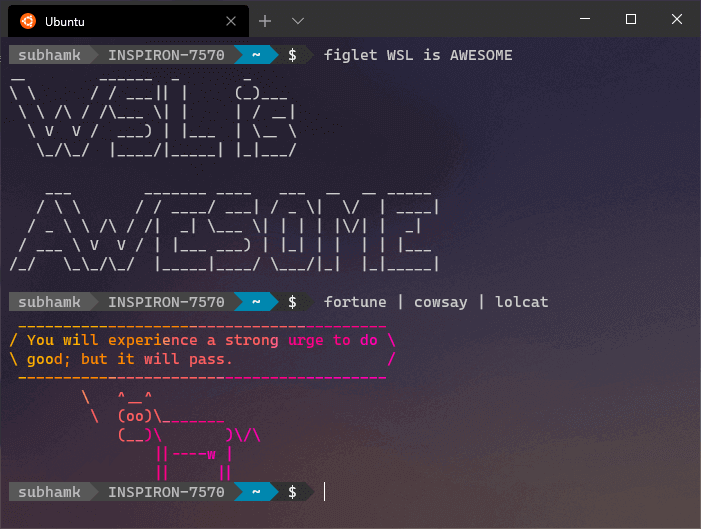
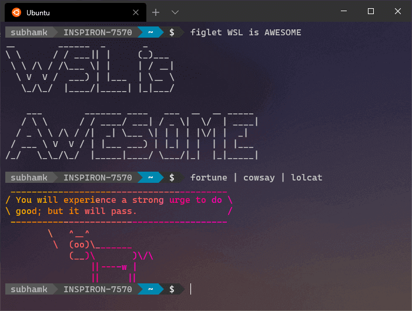

Adding drop shadow to your screenshots is great, specially if you're going to use those screenshots in your website, blogs or any other creative place. Drop shadow makes the images more beautiful and helps to enhance content. Here is an example:
Image without drop shadow


Image with drop shadow

This method requires the Bash Shell, so if you are using Windows, make sure you enable WSL (Windows Subsystem for Linux). If you need help on how to enable and use WSL, you can check out my blog on the same HERE.